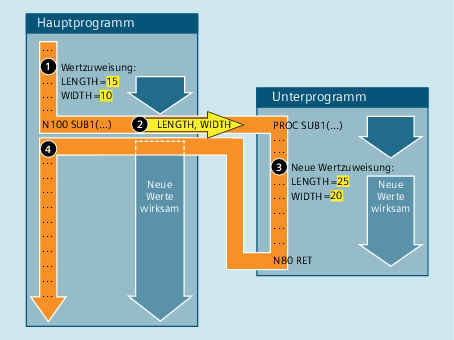

Das aufrufende Programm übergibt bei einer Parameterübergabe Call-by-Reference dem Unterprogramm nicht den Wert einer Variablen, sondern eine Referenz (Zeiger) auf die Variable. Damit bekommt das Unterprogramm direkten Zugriff auf die Variable. Dadurch wird bei einer Änderung des Parameterwerts nicht nur der im Unterprogramm sichtbare Wert geändert, sondern auch der Wert der im aufrufenden Programm definierten Variablen. Die Parameterübergabe Call-by-Reference hat somit auch nach Beendigung des Unterprogramms Rückwirkungen auf das aufrufende Programm.
Die folgende Abbildung soll die Parameterübergabe Call-by-Reference an einem Beispiel veranschaulichen:
① | Wertzuweisung an die Variablen LENGTH und WIDTH im aufrufenden Programm. |
② | Beim Aufruf des Unterprogramms SUB1 werden Referenzen auf die beiden Variablen LENGTH und WIDTH an das Unterprogramm übergeben. |
③ | Neue Wertzuweisung an die Variablen LENGTH und WIDTH im Unterprogramm. |
④ | Durch die neue Wertzuweisung im Unterprogramm werden die Werte der im aufrufenden Programm definierten Variablen geändert. Die neuen Werte sind daher auch nach dem Unterprogrammrücksprung wirksam. |
| Hinweis |
Die Parameterübergabe Call-by-Reference ist nur dann erforderlich, wenn die übergebene Variable lokal in einem aufrufenden Programm definiert ist (LUD). Kanal-globale oder NC-globale Variablen müssen nicht übergeben werden, da auf diese auch direkt vom Unterprogramm aus zugegriffen werden kann. |
Die Definition eines Unterprogramms mit Parameterübergabe Call-by-Reference erfolgt mit dem Schlüsselwort PROC, gefolgt vom Programmnamen und einer vollständigen Auflistung aller Parameter mit Schlüsselwort VAR, Typ und Namen. Die Definitionsanweisung muss in der ersten Programmzeile stehen. Als Parameter können auch Referenzen auf Felder übergeben werden:
PROC <ProgName> (VAR <Par1Type> <Par1Name>, VAR <Par2Type> <Par2Name>, ...)PROC <ProgName> (VAR <Array1Type> <Array1Name> [<m>,<n>,<o>], VAR <Array2Type> <Array2Name> [<m>,<n>,<o>], ...)Unterprogramme mit Parameterübergabe müssen vor dem Aufruf im Hauptprogramm mit dem Schlüsselwort EXTERN bekannt gemacht werden.
→ Siehe Kapitel "Unterprogrammaufruf mit Parameterübergabe (EXTERN)".
Der eigentliche Unterprogrammaufruf erfolgt über den Programmnamen und der Angabe der Übergabeparameter.
→ Siehe Kapitel "Parameterübergabe".
| Definitionsanweisung am Anfang eines Programms | |
| Schlüsselwort für die Parameterübergabe Call-by-Reference | |
| Name des Programms | |
| Datentyp des 1. Parameters (z. B. REAL, INT, BOOL) | |
| Datentyp des 2. Parameters | |
... | ... | |
| Name des 1. Parameters | |
| Name des 2. Parameters | |
... | ... | |
| Datentyp der Elemente von Feld 1 (z. B. REAL, INT, BOOL) | |
| Datentyp der Elemente von Feld 2 | |
... | ... | |
| Name von Feld 1 | |
| Name von Feld 2 | |
... | ... | |
| Feldgröße Aktuell sind maximal 3-dimensionale Felder möglich: | |
| Feldgröße für 1. Dimension | |
| Feldgröße für 2. Dimension | |
| Feldgröße für 3. Dimension | |
| Hinweis |
Der nach dem Schlüsselwort PROC angegebene Programmname muss mit dem an der Bedienoberfläche vergebenen Programmnamen übereinstimmen. |
Definition eines Unterprogramms mit zwei Parametern als Referenz:
Parameter 1: Referenz auf Variable vom Typ REAL mit Namen LAENGE
Parameter 2: Referenz auf Variable vom Typ REAL mit Namen BREITE
Programmcode |
|---|
| PROC SUB_PROG(VAR REAL LAENGE, VAR REAL BREITE) |
| ... |
Siehe auch:
Unterprogramm mit Parameterübergabe Call-by-Reference (PROC, VAR): Weitere Informationen